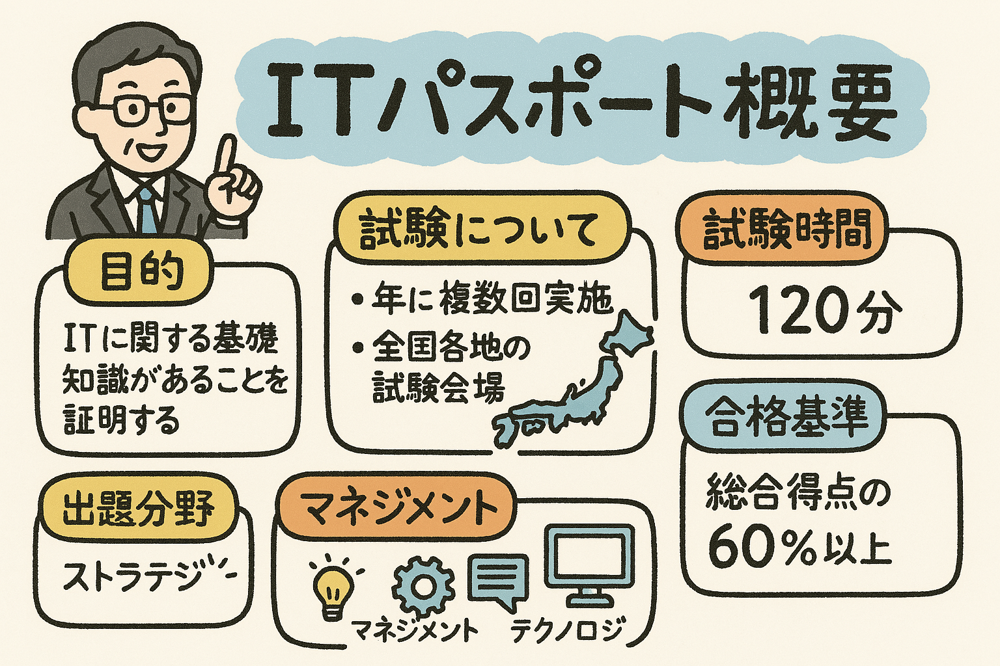

◆ストラテジ系◆ 📊
ストラテジ系はビジネスの視点からITを捉える分野です。企業経営、法律、経営戦略など、IT技術者だけでなく一般のビジネスパーソンにも必須の知識が含まれます。試験では約35問出題されます。
中分類1：企業と法務
経営・組織論
企業の経営構造や組織形態（職能制、事業部制、マトリックス組織など）、CSRや企業統治、リスクマネジメントなどを学びます。
難易度:
業務分析・データ利活用
ビジネスインテリジェンス、データウェアハウス、BPR（業務プロセス再構築）、データマイニング、意思決定支援などの手法を理解します。
難易度:
会計・財務
財務諸表（貸借対照表、損益計算書、キャッシュフロー計算書）の基本構造や、ROI、ROA、損益分岐点などの経営指標を学びます。
難易度:
知的財産権
特許権、実用新案権、著作権、商標権などの知的財産権の違いや保護期間、IT関連の知的財産の扱いについて理解します。
難易度:
セキュリティ関連法規
不正アクセス禁止法、個人情報保護法、サイバーセキュリティ基本法などの情報セキュリティに関連する法律を学びます。
難易度:
中分類2：経営戦略
経営戦略手法
SWOT分析、PPM（プロダクトポートフォリオマネジメント）、ファイブフォース分析、コアコンピタンスなどの戦略策定手法を理解します。
難易度:
マーケティング
マーケティングの4P（Product、Price、Place、Promotion）、STP分析、顧客関係管理（CRM）などの手法を学びます。
難易度:
ビジネス戦略と目標・評価
KPI（重要業績評価指標）、CSF（重要成功要因）、バランススコアカードなど戦略の評価・測定手法を理解します。
難易度:
技術開発戦略
研究開発マネジメント、技術ロードマップ、MOT（技術経営）、イノベーションの種類と普及プロセスについて学びます。
難易度:
中分類3：システム戦略
情報システム戦略
情報システム戦略の立案プロセス、EA（エンタープライズアーキテクチャ）、ITガバナンス、情報システム部門の役割などを理解します。
難易度:
業務プロセス
ビジネスプロセスマネジメント（BPM）、ワークフロー、BPR（業務プロセス再構築）、業務のモデル化手法などを学びます。
難易度:
ソリューションビジネス
SaaS、PaaS、IaaSなどのクラウドサービス、ASP、アウトソーシング、システムインテグレーションなどのビジネスモデルを理解します。
難易度:
システム化計画
情報システム導入の基本計画、費用対効果分析、TCO（総所有コスト）、ROI（投資収益率）などの評価手法を学びます。
難易度:
◆マネジメント系◆ 🔄
マネジメント系はITプロジェクトやサービスの管理運用に関する知識です。システム開発プロセスやプロジェクト管理、サービス運用など実務的な内容が含まれます。試験では約25問出題されます。
中分類1：開発技術
システム開発技術
UML（統一モデリング言語）、オブジェクト指向分析・設計、データモデリング、構造化設計などの手法を理解します。
難易度:
ソフトウェア開発管理技術
開発工程（要件定義、設計、実装、テスト）の目的と成果物、レビュー、ソフトウェア品質管理などを学びます。
難易度:
開発プロセス・手法
ウォーターフォールモデル、アジャイル開発、DevOps、RAD（迅速アプリケーション開発）などの開発手法を理解します。
難易度:
中分類2：プロジェクトマネジメント
プロジェクト計画と統合
プロジェクト憲章、WBS（作業分解構造）、スケジュール計画、予算計画、チーム編成などプロジェクト計画の基礎を学びます。
難易度:
プロジェクトの実行と監視
進捗管理、EVM（アーンドバリューマネジメント）、リスク管理、変更管理、品質管理などの実行プロセスを理解します。
難易度:
プロジェクトの終結
プロジェクト完了報告、最終受入テスト、ナレッジマネジメント、教訓の文書化などのクロージングプロセスを学びます。
難易度:
中分類3：サービスマネジメント
サービスマネジメント
ITIL（ITサービス管理のベストプラクティス）、サービスレベル管理、インシデント管理、問題管理などの基本概念を理解します。
難易度:
サービスマネジメントシステム
SLA（サービスレベル合意書）、SLM（サービスレベル管理）、可用性管理、キャパシティ管理などのフレームワークを学びます。
難易度:
ファシリティマネジメント
データセンターの設備管理、電源や空調設備、バックアップ設備、物理的セキュリティなどの管理手法について理解します。
難易度:
システム監査
システム監査の目的と手順、内部統制、IT統制、J-SOX法への対応などのコンプライアンス要件を学びます。
難易度:
マネジメント系のポイント
マネジメント系は「プロジェクトをどう進めるか」「サービスをどう提供・維持するか」といった実務的な知識です。開発工程やプロジェクト管理、サービス提供の流れを理解することで、ビジネスとITの橋渡しができるようになります。特にPMBOK（プロジェクトマネジメント知識体系）やITIL（ITサービス管理）の基本概念は押さえておきましょう。
◆テクノロジ系◆ 💻
テクノロジ系はITの基盤となる技術的知識です。コンピュータの仕組みやネットワーク、データベース、セキュリティなど技術的な内容が含まれます。試験では約40問出題されます。
中分類1：基礎理論
離散数学
集合論、論理代数（AND、OR、NOT）、グラフ理論、確率統計など、コンピュータ科学の基礎となる数学を学びます。
難易度:
情報に関する理論
2進数、16進数などの数値表現、情報量、シャノンの情報理論、符号理論などコンピュータの基本原理を理解します。
難易度:
データ構造とアルゴリズム
配列、リスト、スタック、キュー、木構造などのデータ構造や、検索・整列アルゴリズムの基本を学びます。
難易度:
プログラム言語
手続き型、オブジェクト指向型、関数型など主要なプログラミングパラダイムの特徴と代表的な言語を理解します。
難易度:
中分類2：コンピュータシステム
プロセッサとメモリ
CPU、メインメモリ、キャッシュメモリ、補助記憶装置などのハードウェア構成要素と動作原理を学びます。
難易度:
システムの構成と評価
クライアントサーバシステム、分散システム、高可用性システムなどの構成方法や、信頼性、応答時間、スループットなどの評価指標を理解します。
難易度:
オペレーティングシステム
OSの役割、プロセス管理、メモリ管理、ファイルシステム、主要なOSの特徴などを学びます。
難易度:
ソフトウェア
ミドルウェア、アプリケーションソフトウェア、オフィスツール、オープンソースソフトウェアなどの種類と特徴を理解します。
難易度:
中分類3：技術要素
ヒューマンインタフェース
UI/UXデザイン、ユーザビリティ、アクセシビリティ、入出力インタフェース技術などを学びます。
難易度:
データベース
リレーショナルデータベース、SQL、正規化、トランザクション処理、NoSQLなどのデータ管理技術を理解します。
難易度:
ネットワーク
LAN/WAN、TCP/IP、OSI参照モデル、ルーティング、ファイアウォールなどの通信技術を学びます。
難易度:
セキュリティ
暗号化技術、認証、アクセス制御、マルウェア対策、情報セキュリティマネジメントなどのセキュリティ対策を理解します。
難易度: